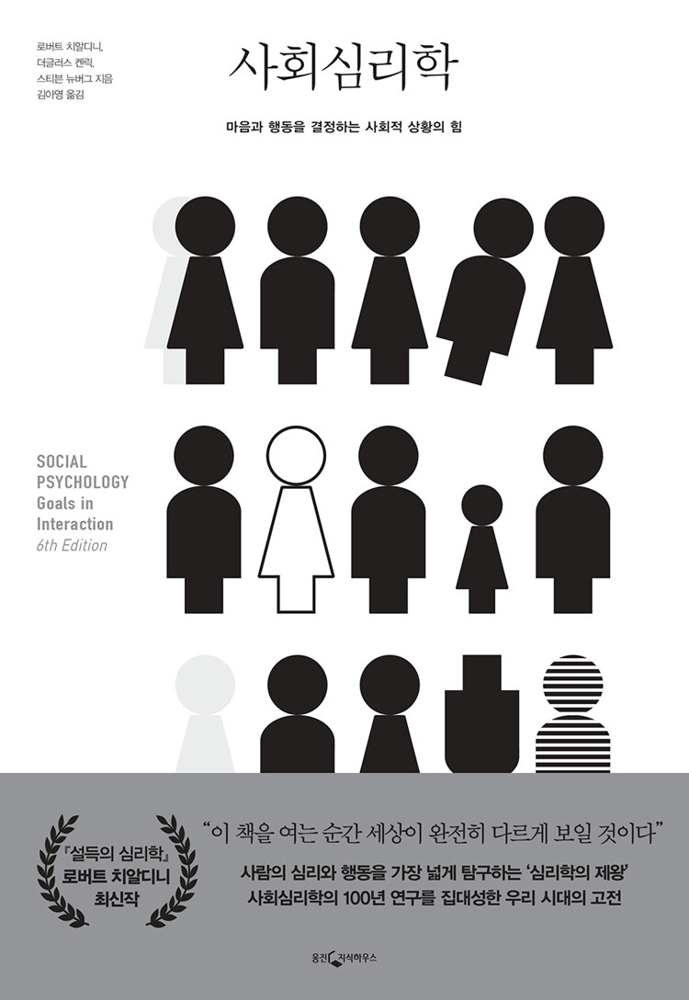

<주요목록>
"메인 화면""도서 리서치"
"도서추천"
10 Best Books in Humanities
<도서추천 목록>
"도서추천-철학"으로 이동"도서추천-인문학"으로 이동
"도서추천-소설"으로 이동
"도서추천-과학"으로 이동
"도서추천-자기계발"으로 이동
1. 정의란 무엇인가?
저자: 마이클 샌덜.jpeg)
<줄거리>
2. 사회심리학
저자: 로버트 치알디니, 더글러스 켄릭, 스티븐 뉴버그 그 외
<줄거리>
3. 사피엔스
저자: 유발 하라리.jpg)
<줄거리>